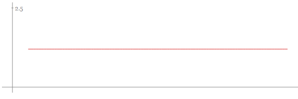
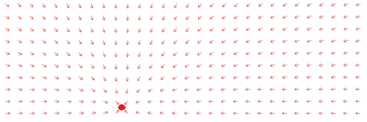
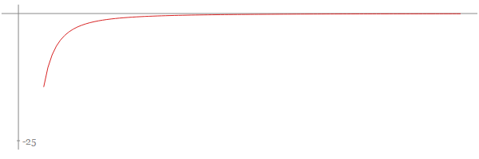
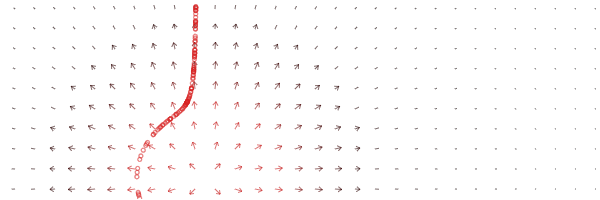
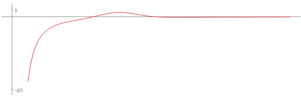
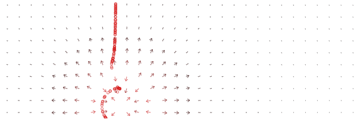
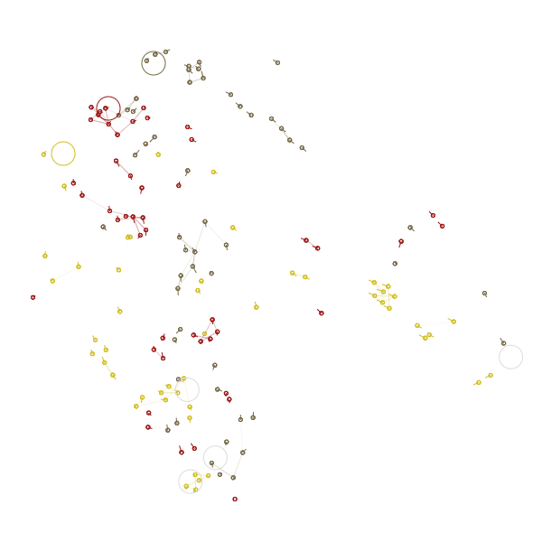

In January, I made a thing for the js1k challenge. It was quite fun to make so I wanted to share the story behind it.
Overview
For those who do not know, the goal of this challenge is to make a JS demo of less than a kilo byte ( this is 1024 char ). It could be about anything, there is a different theme every year if you lack inspiration.
The demo I made is a crowd simulation. Some ants go from their lair to some nice honey pot, go back to the lair and chose another honey pot to visit next... and it goes like that until you get bored and close the window.
There are three different tribes of ants, with three different homes. Each ant like to hang out with members of their tribe but carefully avoid contact with anta from other tribes.
The result is an hypnotic choregraphy of busy ants making their ways into this overcrowded world.
Force Engine
The effect is in fact quite easy to produce. The ant does not require much intelligence. They are assimilated to a point with a mass, a position and a velocity in a physique world.
That means that at every frame, the acceleration is computed for each ant, and applied to it.
The acceleration depends on three forces.
The ant is attracted to a point
Either one of the honey pot or the lair, when it's time to head home.
The ant is always willing to reach the point, be it far away from it or really close. The force is always the same and directed towards to point.
target attraction force amplitudetarget attraction force field
Ants are repeled by other ants
...especially ants with different color.
The force gets stronger when the ants get closer. When they get very close, they are pushed in two opposite directions to avoid collision.
The force is factor of 1/ d^2, where d is the distance between two ants.
neighbour repulsion force amplitudeneighbour repulsion force field
Ants from the same tribes are attracted
...when they are close enough, but not to close. Because travelling together is gunnier that travelling alone, even for ants.
This isn't a common force.
The tricky part is that there is two positions where the ant is comfortable, when it gets to the ideal distance from its friend, and when it is too far away to care about him. Between these two positions, it will be pushed to either one of the stable states.
The force amplitude once again depends on the distance between the ants.
The curve can be read as: A negative amplitude push the ant futher, a positive value attract it. Notice the energy pit when the curve crosses the y axis, when moving away from this position, the ant is pushed back to it.
friend attraction force amplitudefriend attraction force field
demo
This is the result !
You may want to play with the params to see the effect on the world simulation.
world
Going under 1k
It did not use any elaborate trick to reduce the ouput size of the script. All I did was relying on the nice work of@aivopaas and his Js crusher.